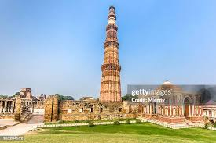
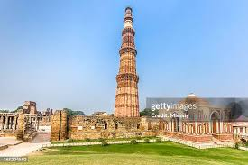

The Taj Mahal,a symbol of eternal love
The Qutub Minar,an architectural marvel in Delhi
India is a land of incredible diversity.From the snow-capped peaks of the Himalayas to the serene backwaters of Kerala, every corner of India tells a unique story.India is the second-most populous country in the world and boasts a history spanning thousands of years.Its rich traditions have left an indelible mark on the world.

India: A land of cultural and geographical diversity
Unity in diversity is not just a slogan in India but a way of life.
Highlights of India include:
India is home to 29 UNESCO World Heritage Sites, making it a paradise for history and architecture enthusiasts.
The Taj Mahal,a symbol of eternal love
The Qutub Minar,an architectural marvel in Delhi
Indiais cultural heritage is a blend of various traditions,languages,and relions.Each region has its unique identity and traditions that are celebrated through festivals and daily life.Here are some highlights:

A glimpse of Indian Classical Dance
Indian food is as diverse as its culture.From the fiery curries of the south to the hearty bread of the north,there's something for everyone.Popular dishes include:
North Indian: Butter chicken, naan, and paneer tikka.
South Indian: Dosa, idli, and sambhar.
Street Food: Pani puri, chaat, and vada pav.

Delicious Hyderabadi Biryani

colorful and flavorful Indian street food